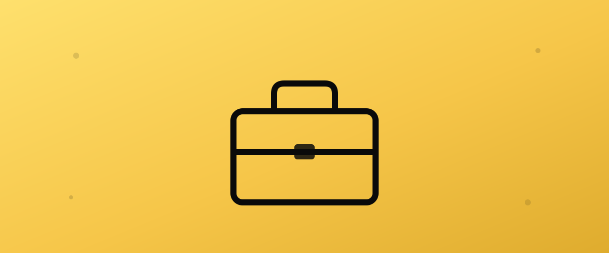
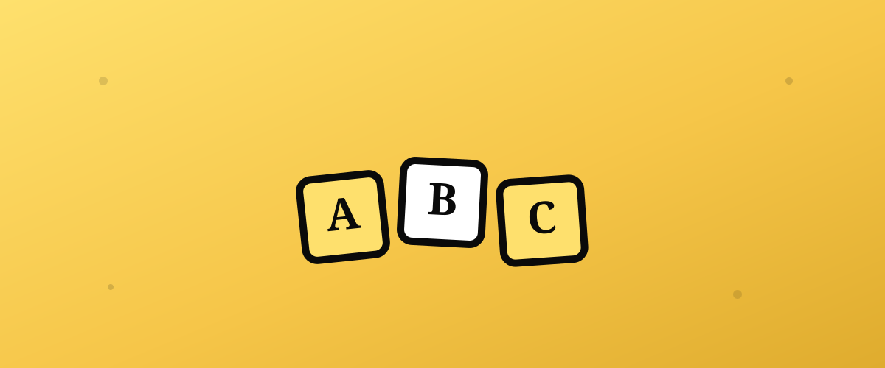
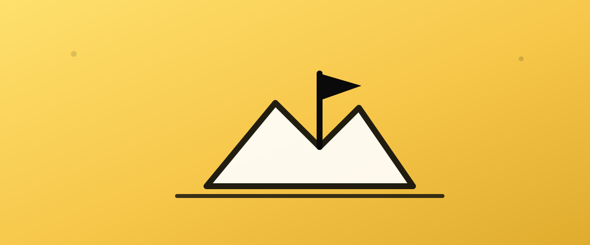

İngilizce öğrenme üzerine rehberler.
Sınav hazırlığından iş İngilizcesine, günlük konuşma pratiğinden çocuklar için İngilizceye kadar - ARMUS öğretmenlerinin deneyiminden derlenmiş pratik tavsiyeler.
IELTS hazırlığında özel ders neden hızlandırıcı olur?
Hedef puanına ulaşmak için hangi beceriye ne kadar zaman ayırman gerektiğini ve bir özel öğretmenin bunu nasıl netleştirdiğini anlat.

Kariyerini büyütecek iş İngilizcesi nasıl öğrenilir?
Toplantı, e-posta ve sunum İngilizcesi arasındaki farkı ve bunları en hızlı nasıl geliştireceğini öğren.
Online İngilizce konuşma pratiği gerçekten işe yarar mı?
Gramer bilip konuşamama sorununu çözmek için haftalık pratik rutini nasıl kurulur.

Çocuğunuz için online İngilizce öğretmeni nasıl seçilir?
Yaşa göre doğru yöntem, ders süresi ve bir ebeveyn olarak dikkat etmen gereken işaretler.
Online İngilizce özel ders fiyatları ne kadar?
Fiyatı neler belirler, bütçeni nasıl planlarsın ve ucuz mu pahalı mı diye nasıl karar verirsin?
İngilizce seviyeni nasıl anlarsın? A1'den C2'ye rehber
A1, A2, B1, B2, C1, C2 ne anlama gelir ve seviyeni doğru belirlemenin en güvenilir yolu ne?
TOEFL mu IELTS mi? Hangisini seçmelisin?
Format, puanlama ve hedefine göre iki sınav arasındaki farkları anlatan pratik bir karşılaştırma.

İngilizce kelime nasıl kalıcı öğrenilir?
Ezberlediğin kelimeleri neden unutuyorsun ve onları kalıcı hafızaya taşıyan bilimsel yöntemler.
Online mu yüz yüze mi İngilizce dersi daha etkili?
Araştırmalar ne diyor, hangi durumda hangisi daha mantıklı? Objektif bir karşılaştırma.
İngilizce öğrenirken en sık yapılan 8 hata
İlerlemeni yavaşlatan 8 yaygın hata ve her biri için somut bir çözüm.
YDS/YÖKDİL hazırlığında özel ders nasıl yardımcı olur?
Çeviri ve paragraf ağırlıklı formata özel bir hazırlık stratejisi.
İngilizce özel öğretmeni seçerken nelere dikkat etmeli?
Sorman gereken sorular, dikkat etmen gereken işaretler ve deneme dersini verimli kullanma.
İş görüşmesi için İngilizce nasıl hazırlanılır?
En sık sorulan sorular, doğal cevap kalıpları ve sahte mülakatla pratik yapmanın gücü.
İngilizce telaffuzunu geliştirmenin 7 yolu
Türkçe konuşanların en sık zorlandığı sesler ve telaffuzu doğallaştırma yöntemleri.

Yetişkin olarak İngilizce öğrenmek gerçekten zor mu?
Yaygın mitler, gerçekler ve yetişkin olmanın sağladığı gerçek avantajlar.
Seyahat İngilizcesi: en çok ihtiyaç duyacağın kalıplar
Havalimanı, otel, restoran ve acil durumlar için pratik ifadeler.